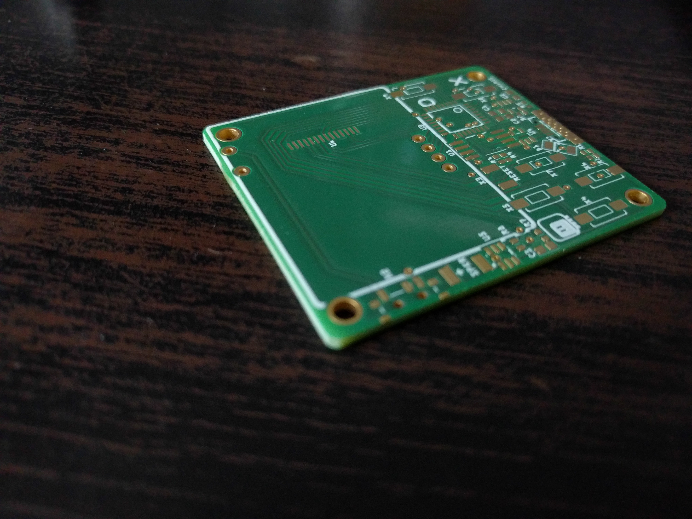
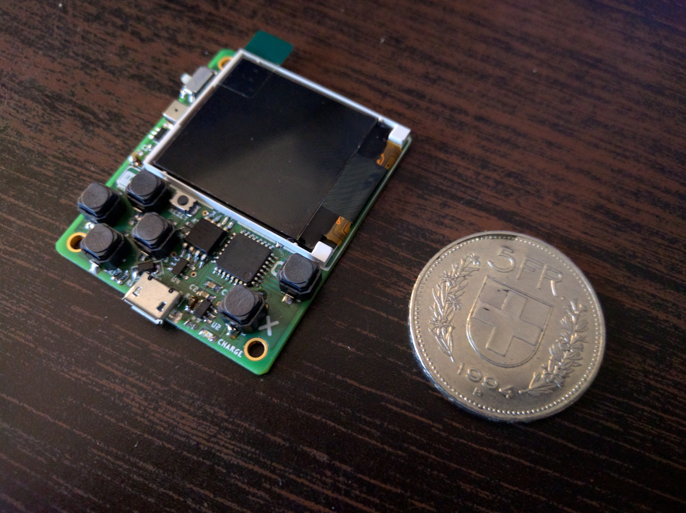
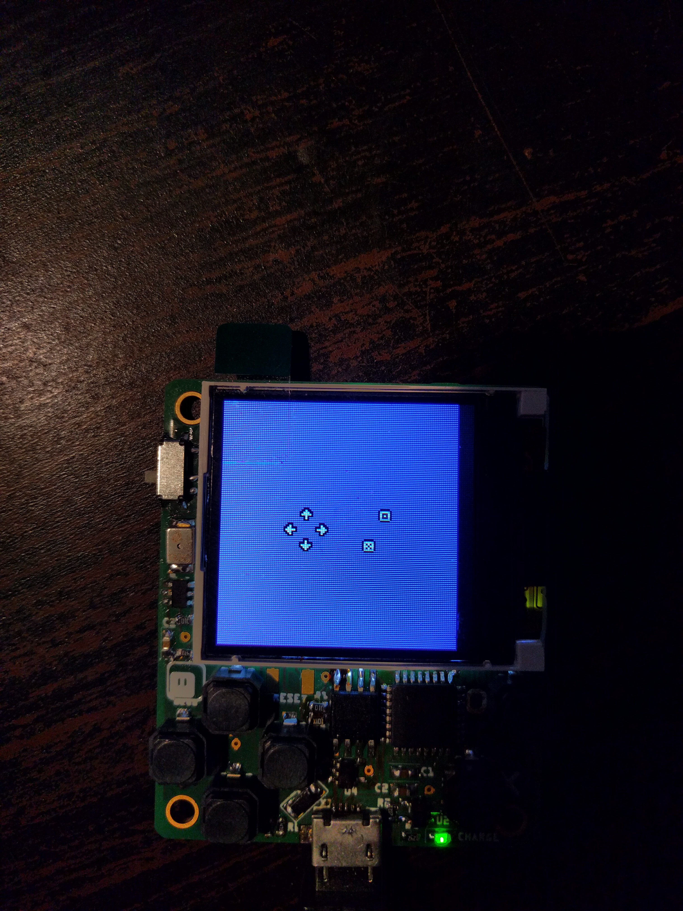

Final Prototype¶
Published on 2017-12-29 in µGame.
The version 8 PCBs arrived from Aisler, together with the stencil, and it looks great this time!
Please especially note the smooth edges of the board, without any trace of the panelization tabs. Of course I immediately assembled one of the boards and tested it:
It works great. Please note the much nicer alignment of the chips, and the fact that there are no parts under your fingers. One of the buttons had to be moved a little to the side, but it’s actually better that way.
Of course there were still changes needed, but they are so small, that I can confidently send the gerber files to the fab without ordering one more test board. The changes included adding one more debug pad for connecting VCC, adding holes to the debug pads so that it’s easier to connect probes to them, moving some of the resistors a little to make them easier to solder, and fixing the stencil to include the pads for the USB port, and exclude the holes of the power switch (workarounds for Fritzing’s weirdness).
I also wrote the step-by-step testing instructions, and made a test program:
So everything is ready for fabrication. I will now send all that to the fab house, and see what they think about it.